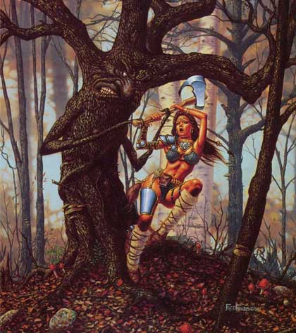

|
 |
Climate/Terrain | Foreste Temperate |
| Frequency | Rare | |
| Organization | Solitary | |
| Activity Cycle | Any | |
| Diet | Carnivoro | |
| Intelligence | Average Intelligence (10) [14 punti combattimento] | |
| Treasure | Vedi Sotto | |
| Alignment | Neutral Evil | |
| No. Appearing | 1 | |
| Armor Class | 2 | |
| Movement | 3 | |
| Hit Dice | 9+3 | |
| Thac0 | 11 | |
| No. of Attacks | Ramo (botta) / Ramo (botta) | |
| Damage / Attacks | 1d12+3 / 1d12+3 | |
| Special Attacks | Scagliare Pietre | |
| Special Defenses | Resistenza a Botta, Punta,
Freddo Mimetizzazione Superiore - Rigenerazione |
|
| Special Weakness | Vulnerabilità al fuoco | |
| Magic Resistance | 33% solo magie di Evocation Water | |
| Size | Huge (altezza: 5 m.) | |
| Morale | Fanatic (18) | |
| XP value | 3500 |
Descrizione
Il Wicked Tree è un albero vivente malvagio che vive nelle foreste temperate. Appare come un normale albero di circa 5 metri d'altezza dal fusto robusto e dalla corteccia scura. Quando questa creatura resta immobile è impossibile da distinguersi da un normale albero. Quando, invece, la stessa si muovo per attaccare sulla parte alta del suo tronco si forma un viso ligneo malvagio con presenza di occhi, naso e bocca.
Combat
Il Wicked Tree attacca con i propri lunghi rami che utilizza come arma da botta. Con i suoi rami il Wicked Tree può attaccare fino a 6 metri di distanza ed a tale distanza può anche effettuare attacchi alle spalle (non può effettuare tali attacchi quando le creature si spostano in tale raggio d'azione avvicinandosi al tronco dell'albero). Ogni ramo produce 1d12+3 danni da botta.
SCAGLIARE PIETRE: In luogo di effettuare entrambi gli attacchi fisici i Wicked Tree possono utilizzare i loro rami per scagliare massi sui loro avversari. Il Wicked Tree può scagliare massi alle seguenti distanze: 21 metri (distanza corta), 36 metri (gittata lunga -2 Thac0), 51 metri (gittata lunga -5 Thac0). Si tratta di un attacco ad un singolo bersaglio che richiede regolare tiro per colpire. Se il tiro per colpire ha successo la vittima subisce 1d12+1 danni da botta. Solitamente il Wicked Tree accumula ciottoli dove si trova da poter scagliare in caso di pericolo, per tale motivo, comunemente, quando si incontra questa creatura la stessa dispone di 3d6+2 ciottoli.
RESISTENZA ALLA BOTTA: La corteccia del Wicked Tree è particolarmente resistente ai danni da botta, per tale motivo il Wicked Tree subirà solo il 33% (per difetto) di tutti i danni da botta provocati nei suoi confronti.
RESISTENZA ALLA PUNTA: La
corteccia del Wicked Tree è particolarmente resistente ai danni da punta, per tale
motivo il Wicked Tree subirà solo la
metà (per difetto) di tutti i danni da punta
provocati nei suoi confronti.
RESISTENZA AL FREDDO: La
corteccia del Wicked Tree è particolarmente resistente ai danni da freddo, per tale
motivo il Wicked Tree subirà solo la
metà (per difetto) di tutti i danni da freddo
sia di natura magica che naturale provocati nei suoi confronti.
RIGENERAZIONE: Il Wicked Tree rigenera 1 punto ferita alla fine di ogni round fino a che non muore raggiungendo il valore di 0 punti ferita.
MIMETIZZAZIONE SUPERIORE [FORESTA] (Superior Special Ability): Quando la creatura resta ferma è capace di mimetizzarsi nell'ambiente indicato. In particolare, fino a che resta ferma costei non potrà essere notata dalle creature che passino ad una distanza superiore a 30 metri ed otterrà una possibilità pari al 95% di non essere notata dalle creature che le passano ad una distanza inferiore. Utilizzare quest'abilità richiede un'azione complessa dalla durata dell'intero round e la creatura potrà risultare, quindi, nascosta solo alla fine del round. Per restare nascosta la creatura non potrà compiere altre azioni complesse e non potrà spostarsi (si faccia eccezioni per piccoli movimenti effettuati sul posto). Si noti che questa abilità non può essere utilizzata nei confronti di chi ha già visto la creatura fino a che questa non esce dalla sua linea visiva. Si noti che il tiro percentuale è effettuato segretamente dalla creatura un'unica volta ed il suo risultato sarà applicato a qualsiasi soggetto fino a che costei non si sposti od agisca diversamente. Il risultato di questo tiro si considererà incrementato di una penalità del +10% al fine di verificare se la creatura si è nascosta nei confronti di soggetti dotati di Sensi Superiori o che posseggano la competenza Observation ed abbiano superato una prova nella stessa (+15% nei confronti delle creature che abbiano entrambe le caratteristiche). Il risultato del tiro si considererà incrementato di un'ulteriore penalità del +25% al fine di verificare se la creatura si è nascosta nei confronti di soggetti dotati di infravisione (che sia attiva e sempre che la creatura si trovi all'interno del suo raggio). Qualora la creatura risulti nascosta con successo alla vista dei suoi avversari ed agisca improvvisamente costei imporrà loro una penalità di -3 alla relativa prova sulla sorpresa.
VULNERABILITA' AL FUOCO: La
corteccia del Wicked Tree è particolarmente sensibile ai danni da fuoco, per tale
motivo il Wicked Tree
subirà il 125% di tutti i danni da fuoco
(calcolato per eccesso) sia di natura magica
che naturale provocati nei suoi confronti.
MAGIC RESISTANCE:
Il Wicked Tree ha il 33%
di possibilità di resistere a qualsiasi magia abbia come scuola principale
Evocation Water.
Habitat/Society
Il Wicked Tree è un essere solitario che vive nelle foreste temperate e si nutre delle creature che hanno la sfortuna di avvicinarsi troppo allo stesso. Quando il Wicked Tree abbatte una vittima si sposta sulla stessa per assorbire i suoi fluidi vitali con le possenti radici.
Ecology
Chi possiede la
competenza bowyer/fletcher e porta con se il relativo kit da arciere può
provare, superando una prova con -3 di penalità sulla stessa, a recuperare
dall'albero 1d3 pezzi del seguente legno speciale che possono essere utilizzati
per la creazione degli archi (per ogni creatura uccisa è possibile effettuare
un'unica prova che richiede 1 turno di lavoro):
Legno di Wicked Tree
Valore 250 g.p., Modifica check: -1,
Utilizzabile fino ad archi superbi
L'arco prodotto è di colore scuro (simile all'ebano) e permette di scagliare
frecce con potenza superiore al normale. Le frecce scagliate a distanza corta
ricevono un bonus di +1 ai danni (si considera un bonus dovuto alla forza al
fine del calcolo del massimale di danno producibile).
Il valore finale dell'arco prodotto cresce del +35%
Mystical Resource Sourge (Linfa) Quantità: 3, Presenza 33% - Effetto Particolare: Rigenerazione - Qualità della Risorsa: Common.
Tesoro
Queste creature non collezionano tesori. Per tale motivo possono trovarsi tesori fra le proprie radici (od in casi rari appesi ai propri rami) solo sporadicamente.
| % di ritrovamento | TIPOLOGIA | Ammontare ritrovato |
| 25 % | Gemme | 1d6 |
| 25 % | Oggetti Preziosi | 1d3 |
| 25 % | Oggetto magico | 1 1d10: (1-6) common (7-10) rare |
| 25 % | Arma | 1 |
| 25 % | Armatura | 1 |